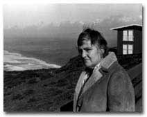
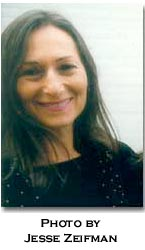
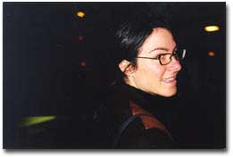

|
The nomadization of culture & the electronic page By Etel Adnan There are two essential elements to the nomadic world: mobility and impermanence. I see, like tides advancing, nomadic ways of life and of thinking to be overtaking the contemporary world. The old caravans, which went from Egypt to the Atlantic through the Saharan Deserts, or Eastward to China and Mongolia, were not wanderers or camel herds in search of water, but genuine commercial lines of communication. These caravans carried goods the way trucks and cargoes do nowadays, but more importantly they carried ideas. Goods, in and of themselves, already can imply ideas. They can carry cultural ideas or ideology. For example, the spread of Islamic Revelation in desert regions cannot be explained otherwise, as it involved an area ranging from the Hejaz to Syria, Iraq, Iran, Afghanistan, Central Asiaall being essentially nomadic lands, tribal populations. The crucial role of nomadism in the spreading of communications (before the advent of the printing press) is duplicated today with the invention and the use of electronic networks. The computer has turned the world into the sustainer of myriads of communication lines where thinking can spread out beyond the old system of printing and diffusing ideas through books which are material objects, heavy and space consuming. We have entered an era where things (meaning messages and thoughts) move instantly, with no visible traces, thus fitting a nomadic society which is more of a servicing society than an object producing one. You cant carry libraries and files on camelback. The emphasis, for ancient culture, was on memorization. Tribal societies developed poetry at the expense of novels because the former was easier to memorize, and because poetry is a more economical way of thinking than other forms of literature. And the contemporary world is moving in that same direction: the emphasis is made possible, or facilitated, by computers. As the nomad carried his whole culture in his head (usually a basic religious/legal "book" like the Koran, the Bible, Asiatic wisdom books etc.), we are already carrying in a small computer "all the data we need," and pretty soon "all the literature or the knowledge we will want." Whole societies nowadays are on the move in massive human tides. The panic created in European countries in the face of immigration calls for attention. The influx of refugees and job seekers represents something more than just an economic phenomenon. It is a deeper stirring, the kind of tidal waves that the Crusades were, or other great invasions of the past. But this time there are no generals leading these migrations; these are spontaneous, probably irrational, instinctive movements of populations. Of course there are economic and political factors concerning these migrations, but I think of deeper forces: the human animal is both nomadic and sedentary, but technology, scientific advances, explorations of outer space, have created an environment, both psychic and intellectual, which stimulates, favors, the nomadic, over the conservative, sedentary instincts of humans. The electronic age is about movement: the simultaneous transmission of (written) thought through e-mail, following the transmission of the spoken through radio and telephone, has loosened the maximum boundaries of the book. Objects containing thoughts, such as books, documents, letters, etc., see their role minimized in this new context. The audience is not limited anymore; thinking is, so to speak, thrown to the winds. This globalization of ones audience reminds us, strangely, of the great imperial periods of History. In this worldwide feeling of uncertainty some things are certain: on the one hand the mobility of goods and capital is pushed to its extremes, meanwhile the mobility of people is seen as a threat and is being contained (as much as possible). Traditional cultures are breaking down under globalization of objects and ideas, ideas represented not only in books but also through all the arts and architecture, under the power of the web which is a real web. It is as if the world has become a huge spider whose head is nowhere to be seen and its threads create a mesh, which encompasses the whole of the planet. This mondialisation of practically everything creates its antidote: we cannot go back to the tightly closed nation-states, but are heading towards a new kind of tribalism: the world is breaking down (in a most fluid way), into "groups," "cultural organizations," "communities," which are not linked by cultural space but by a common "network." All of this is made possible by the computer age. In that sense our real neighbor does not inhabit the same street, but rather a similar electronic address. Our audience is not in the same room, but in front of the same electronic page, so that all the groups, some of them overlapping, the societies, the leagues, the networks and associations, organizations, political parties, to which we increasingly belong, become tribes of a new kind which gather periodically and disperse, each member joining other tribes, and this ad infinitum. Welcome to How2, one of your tribes! BIO: Etel Adnan came to this country to do a masters in Philosophy at Berkeley, then moved on to Harvard. She taught Philosophy and Philosophy of Art at Dominican College in San Rafael, where she also started painting. She is the author of 8 books of poetry, a novel about the Civil War in Lebanon, a book on Paris, a volume of letters and the essay "Journey to Mount Tamalpais" on the relationship between nature and art, as well as her theory and practice as a painter.
"The New Arcades: A Pocket Guide" By Norma Cole
A another killer app B whose clear purpose was to break the tyranny ofthe perimeter C as like a striking clock D rem praesentem motion added, poised E "intervals," we are the shape memory alloy, ultra-resilient, available and lit up F our outlooks shape what we see and what we can know G but when science and culture conflict, culture always wins H room for difficulty, complexity, resistance, as in "please let me be misunderstood" I in terms of the generation of a new systems generations of systems J "And theyre at the gate!" K the glass roofs suspension of disbelief L miniaturization and shapeshifting covers for shyness and a bad stammer M Elizabeth Carter 17171806 Translator, linguist, poet. Latin, Greek, Hebrew, French, German, Italian, Spanish, Portuguese and Arabic. Wrote Poems Upon Particular Occasions and Poems Upon Several Occasions. Wrote for Johnsons Rambler. They were friends for fifty years. She is occasionally an index entry in biographies of Johnson. Current editions of Richardsons Clarissa credit her poem he used in his text, although he did not in the first edition. He later apologized. Find her spectacular translation of Epictetus, [freed slave and Stoic philosopher whose discourses were written down by Arrian, his pupil]. N brave new superior user existence O escaping this flatland is the essential task of envisioning information P to teach the reader to think recursively Q the angle of the reader permits the next layer of data to be read R books are a social product as are the libraries that hold them S Hey sis, is freedom from memory freedom from sociality? T in the psychotropics the means of production are U the sublime has been defined by philosophers in terms of formlessness and experience at the limit of what can be apprehended V at what point does reading become bedroom painting? W most evolutionary novelty arose and still arises from symbiosis as in acid heat lover + swimmer + oxygen breather --> the subtle swimmer, causer and target, unable to swim and to divide at the same time X by readers standards Z within the retinal frame bibliographical note: cf. Walter Benjamin, Norma Cole, Arthur Danto, Bei Dao, Ray Jackendorff, Christopher Kool-Want, R.C.Lewontin, Lynn Margulis, Bonnie McDougal, Frank Stella, Edward R. Tufte Bio: Norma Coles recent volumes of poetry include MOIRA, Contrafact and Desire & Its Double. A slide-text piece, "SCOUT," is forthcoming from Krupskaya Press in CD ROM format. Her translation of Anne Portugals Nude is forthcoming from Green Integer, and Crosscut Universe: Writing on Writing from France, selected and translated by Cole is forthcoming from Burning Deck.
By Michael Floyd Since the first half of the Twentieth Century, sound has played an increasingly important role in the crafting of narratives and the transmission of information. Sound's role in media-like radio and cinema not only caused shifts in oral communication and methods of montage, but came to play an important role in the ways that these media reconfigured spatial representation and perception. As the global communications network becomes an increasingly online flow, the internet inherits a rhetoric of remote communication and spatial contamination first nourished by early radio work. And as digitized images, both still and moving, proliferate in the visual frame of the browser, we might begin to wonder how cinema's model of audio-vision can be understood in its relationship to the online experience. As readers of hypertext, the principle structuring and orientating motor in cyberspace, how can we understand the relevance of sound to the predominantly silent online digital space that harbors both rhetorical and formal elements of radio and film? Hypertext makes no noise. Whatever spatial imaginary it is that hypertext activates, urban or otherwise, it excludes the acoustic dimension. The silence online resembles nothing more than the outer-spatial silence of a vacuum. There is no murmur in the distance to suggest isolation; there is no room-tone as in film; there is no sonic signal interference--cosmic or terrestrial--as in radio. In fact, the bleeps and escalating rush of static accompanying log-on have an opposite meaning to similar noises in radio. What once characterized the informational informe has now become a sign of connectivity and access. The log-on noise is a rush of bits, an accelerating flow immersing the user in a new data-sphere, and resembles nothing so much as a space shuttle's noisy departure from the atmosphere and entry into the silence of a vacuum. Older media like radio, film, and television all had specific acoustic characters owing to their accommodation of noise as a data-background. The impurity of sound in these media and the distinction between synchronous and asynchronous sound allowed for a figure-ground relationship where the sonic content of a broadcast, program, or montage leapt forward against a backdrop of interference or ambience, performing as a powerful organizer of the spatial imaginary. How can sound resonate in the transphysical city of language? At this point, it is difficult to imagine navigation by sonar online. Hyper-sound is still a slippery and dissonant concept. The streaming sound currently available online has a compressed and fractured character. Audio streams and net radio are tapped much as faucets are opened. Real-time online audio continues to remind us of the hard-wires piping information to any online terminal. That is precisely why the term "net.radio" always rings with a note of irony: the airwaves have been brought back down to earth. Hypertext and streaming sound are configuring cyber-space in almost opposite ways. While hypertext mobilizes the spatial imaginary into a sense of virtual urbanism, streaming sound, crushed into a low-resolution format and grounded to the physical network of telephony, returns the user to a base-physicality. Online sound does not yet inscribe virtual space but is itself inscribed by the technological conditions of that space. Cyber-space has already developed as a predominantly visual lattice of text and image, and will continue to do so for some time before acquiring an integrated acoustic dimension. It remains to be seen what artifacts the current infancy of online sound will bring to the expanding optical landscape already online. Bio: Michael Floyd graduated from Princeton University in 1999. His thesis, "Asynchronous Space-Dub City: the acoustics of a mediated environment," was written on sound and urban space. Currently, he lives and works as a musician and a sound engineer in New York City.
<hyper> beyond By m. mara ann An interesting discussion secondary to the emergence of the Web and hypertext media is one of likeness and difference. Since its debut over five years ago, there has been a consistent and ongoing attempt to define the Web and hypertext media as likened to something that we already understand and with which we feel safe, like print media. In parallel, there is the related challenge of reconciling hypertext media with the tangibility of print because of its inability to exist outside of the box; questioning our relationship to the physical and the placement of value on the material. At the center of these dialogues is a knowledge that the Web is both of these: similar to print publishing mediums in its presentation of information, but vastly different in its seemingly indefinable and intangible limitlessness of dimensionality. One of the most satisfying hypertext experiences for me occurred while I was an undergraduate, before any commercialization of the Web, in a course dedicated to the plays of William Shakespeare. Each evening as I poured through the pages of another tragedy, comedy, or history, in my "Complete Penguin Shakespeare," my left index finder navigating the body text and my right index finger at the bottom of the page navigating the corresponding footnotes, I reveled in the immediacy of related texts, relational topics, and literary dimensionality. Now, almost fifteen years later and as the publisher of an online poetry journal, I find that the hypertext medium offers an even greater opportunity in demonstrated correspondence including visual, audio, and heightened textual dimensionality. Within this capacity, ideas may locate themselves within a spatial atmosphere defying the physical laws of place and thus opening to the possibility for expanded and enhanced articulations. This is not to say that print medium does not offer an equally engaging forum for invention and discovery, but I would posit that hypertext provides a new and different lattice for expression where the text is fused with an infinite capacity for branching and relational spatiality. Inherent within this discourse of print and online media, difference and devaluation are surprising companions where prejudice for the tangible in print publishing tends toward marginalization of the Web as a viable publishing medium. That despite the innovations of relational correspondence, because online publication is often perceived as simply a digital translation of print publication and devoid of the material value of a physical thing, that it is less real, and thus, less important. Difficulty arises in the effort to define by association and a consequent devaluation in comparison. Thus, in this like comparison, what becomes fundamentally at stake is our general location of value on the material. Its not surprising that in an attempt to understand the Web and hypertext media, that one would look to the referential in order to approximate an understanding of it. However, to accept the Web as a new and different publishing medium, that does not challenge or devalue the print publishing medium, but instead enhances it through qualities of likeness and difference, is to open literary discourse to yet unarticulated possibilities for dimensionally correspondent literary expression and understanding. Bio: Raised in the Colorado Rocky Mountains, m. mara-ann is a San Francisco based poet, Web developer, and publisher of http://www.medusa.org/wood/ WOOD, an online journal published quarterly featuring collaborations between poets and visual artists. She is currently working on lighthouse, forthcoming from Atelos press and has recently completed an album length collaborative project with composer Sean Abreu entitled Water Rights. Her work has most recently appeared in Chain 5 , Prosodia 7 & 8 and Debt.
A Painting = Image = [n]. A Painting in Cyberspace = [n], if and only if "Image" is not "A Painting". Translations are not necessary when learning new languages. Questions. Mutations. Networks in the system in my body in my painting. what a painting is. what is a painting. Finding new space is good for the soul.
BIO: Marisol Martinez is a painter who lives and works in New York City. Quotidian Shatterings...nonetheless grouped coherently By Meghan Quinn For a question addressing ephemeral space, Wendys is strikingly physical. She asks that we accept concrete metaphors of architecture and urban landscape as starting points for locating ourselves in an abstract realm. Is this kind of conceptual slippage inherent to the medium or due to the awkwardness of language that accompanies a new technology? "AS A (W)READER" (1) In discussions of hypertext fiction, much is often made of the "active involvement" of the reader. The making of meaning in cyberspace rests heavily on this so-called reader, specifically in the relationships among the texts she chooses -- out of which the she must make her own particular sense. It is perhaps for this reason that the word "user" is sometimes substituted for "reader." "Using" may be a more appropriate term for what one does in cyberspace anyway. One reason is the relative youth of the media itself. As Marshall McLuhan explains, we have so internalized the apparatus of print (turning pages; silently reading, line by line, a physically homogenous text) that the technology has taken on a kind of "transparency," whereby we do not "see" a book as a technology per se. The heterogeneity and visual non-uniformity of some hypertext can prevent one from achieving the kind of direct, physically dis-associative communication that print media has come to enable. Michael Joyce puts it succinctly when he writes, "text on the screen is conspicuously non-print" (2) Accordingly, where one must actively use relatively unfamiliar apparatus (keyboard, monitor, mouse) to engage with hypertext, "reading" is again not quite an accurate term. One is reminded, also, that "user" suggests a very different relationship to text than does "reader." A relationship, I think, which is infused with a strong sense of consumerism. While the kind of sense the reader makes in cyberspace may be aggressively mediated by the literal aspects of the computer terminal, the sources of the information one reads (or uses) may be less mediated in that they need not necessarily be processed by publishers, editors, corporate interests, etc. This is of course untrue of plenty of sites (including How2), whose hierarchies operate similarly to that of a print publication. Nonetheless, for those with access to the equipment, self-publishing and access to self-published work has never been easier, and certain levels of corporate mediation, at least, may be bypassed. Joshua Meyrowitz has argued (of television) that unprecedented access to information, the specificities of the world outside, the "private" lives of other people, has eroded our "sense of place." (3) Meyrowitzs idea seems especially relevant to cyberspace, where the parameters of social geography are mental (or technological). In a realm where the idea of place is even less stable than in those of other media, it becomes tricky to "locate" ourselves in the old sense of identification with either a physical or an ideological position. But there may be other possibilities, ways more suited to the medium. Marcos Novak writes, "I combine words and occupy places that are the consequences of my words." (4) But this is perhaps only fully true if one completely understands the structures one is working with and within. Once, information was external to a reader; now, when we use the web, we say we are "in" the information -- or "on" it, implying that we can stay afloat on (even surf!) this vast sea by using our "navigator" to make our chosen connections. The threat of consumption is palpable, especially to one not trained in computer science. The temptation to respond reflexively by consuming can be powerful. In cyberspace, as in real life, one must choose "locations," sites for ones selves to reside. But in the context of Wendys question, we cannot simply locate ourselves "as readers and writers," because, in a textually based cyberspace, everyone is a reader, a writer, or both. And we cannot claim to locate ourselves in identity because the very idea of the unitary self has been weakened or undermined by postcolonial and feminist theories (among others) and even by the processes of cyberspace. As Judith Butler and others have exposed the social construction of gender, post-colonial studies has insisted upon a notion of "individual subjectivity that is defined in terms of multiple subject positions" (5) based on experiences of migration, mimicry, and crises of cultural identity. Both point to a mutable, decentered subject, one which resembles Donna Harraways well known "cyborg." (6) Haraway argues that communications and biotechnology reduce bodies (bodies of knowledge and corporeal bodies) to coding, which are then subject to disassembling, reconstruction, and transformation. The techno-body brings about a new subjectivity (the cyborg), which takes for granted the erosion of boundaries between body and machine. If we accept these ideas on subjectivity, our means of location must then be flexible, multiple, and able to simultaneously encompass many variables. I would like to suggest that we try to "locate" our places on the web in terms of consumption and production. Not by declaring, "I am a consumer" or "I am a producer," but in action. For example, I locate my connection to feminism as a historically based position from which I act rather than a "natural" connection to an essential womanhood. Analogously, I hope to locate myself in cyberspace as one of the producers of its structures. And in doing so, if I recognize Harraways manifesto, I locate myself as one of those structures. But unlike in the physical world, where "structure" implies rigidity, the structural "locations" I imagine remain in flux. When my piece of the structure disappears, another takes its place. And in this I can remain always flexible, and do not recognize inherent hierarchical positions (such as those associated with print text) because any given location equals any other. As a writer The next step then, it seems, is to locate oneself as a writer. I mean this not in the "type and click" sense, but as a practical response to being overwhelmed by a cyber-scape in which one only visits sites that have already been constructed. This is my response to Wendys final question about the "trans-physical city of language." It is a stunningly beautiful idea, but one that doesnt seem likely as more and more hypertext writings are only available on CDROM (through such companies as Eastgate), (7) and access to sites is controlled internally by tagging and meta-tagging; externally, by the threat of censorship, either legislative or local (e.g. bosses, parents); and economically, by access to computer knowledge and equipment (not to mention the "free" [non-earning] time it takes to create). The idea that the audience helps construct the text is not particular to hypertext (Derrida wrote it; so did Shakespeare). It is the visual manifestation of collaboration that makes hypertext so exciting. Electronic texts "expose the patchwork" of our lives, (8) and it is this very mutability and fragmentation that hypertext readers and writers seem to find compelling. But the state of fragmentation can be embodied by print; what is a footnote if not a kind of hypertext? I think if we "as writers" want to locate ourselves in the way writers generally want to be located, that is to say, in a way which will be both fresh and noticed, we must open our ideas of writing to the specific ways hypertext differs from print. Since I am a newcomer to hypertext, those aspects that interest me are relatively basic. At the most obvious level, hypertext can engage multiple senses, allowing image, sound, and even touch to emerge from or interact with or morph into or from text. Secondly, the sense of parallel and perpendicular universes in the vast network of cyberspace imparts a feeling of profound interconnectedness, a "holistic" approach to text which might begin to subvert the Romantic notion of the isolated, subjective artist. Related to this, cyberspace may help enable the deconstruction of the authority of presence, and therefore undermine hierarchies based on body or location in the physical world. In cyberspace, any presence is potentially tenuous, prone to (or even dependent upon) trickster shape-changing and transformation. There can be no claims to "natural" or even identity-based authority where nothing "is" but only "seems." This can bring a delightful playfulness to hypertext writing, even as it may precipitate a serious crisis regarding what-is-to-be-believed. And in a space of subverted authority and nonlinear time (in that many worlds [realms - representations] of "time" may run simultaneously in cyberspace), what is the place of memory? What can we call memory if seeming is being? Or will we start to think in new ways about randomness and patterns, in the ways we think long-term about history? I hope so. Finally, in hypertext I see representation of an almost hyper-realism. Hypertext can reflect the tension one feels amidst constant adaptation and change, whereby quotidian shatterings are nonetheless grouped coherently enough by our brains so that we make peace (however tenuous) with its pieces and live as we must as "intentional beings." (9) And, as in any medium where this tension is realized and reflected, we can find art. Footnotes: 1. "The nature of [hypertext] transforms the meaning of the word 'reader.' No one has found the right noun yet...some have tried 'wreader,' many make due with 'user.'" Guyer, Carolyn, in "Page Versus Pixel." FEED Magazine. <www.feedmag.com/95.05dialog1.html> (back to text) 2. Joyce, Michael, in "Page vs. Pixel." FEED Magazine. <www.feedmag.com/95.05dialog1.html> (back to text) 3. "'Sense' referring to both perception and logic and 'place' meaning both social position and physical location." Meyrowitz, Joshua. "No Sense of Place: the impact of electronic media on social behavior", in The Media Reader, eds. MacKay, Hugh and Tim O'Sullivan. London: Sage, 1999 (100). (back to text) 4. Novak, Marcus. "Liquid Architectures in Cyberspace", in Cyberspace: First Steps, ed. Benedikt, Michael. Cambridge, MIT Press, 1991 (229). (back to text) 5. Odin, Jaishree K. "The Electronic Revolution." (www.svpa.hawaii.edu/aln/lit_imp.htm> (back to text) 6. Donna Haraway, "A Cyborg Manifest: Science, Technology, and Socialist-Feminism in the Late Twentieth Century," in Simians, Cyborgs and Women: The Reinvention of Nature. New York: Routledge, 1991. (back to text) 7. While I recognize that writers of every media must make a living, I can't help hoping for a way to distribute hypertext writings that doesn't mirror the present world of print publishing, in a way that both respects and protects the writers and allows as many readers as possible to enjoy their work. (back to text) 8. Joyce, Michael. "Forms of Future." <media-in-tansition.mit.edu/articles joyces.html> (back to text) 9. Turkle, Sherry, "Identity in the Age of Internet" in The Media Reader, eds. MacKay, Hugh and Tim O'Sullivan. London: Sage, 1999 (292). (back to text)
BIO: Meghan Quinn graduated from Barnard College in 1998. She now lives and works in Ishikawa, Japan.
5 Graphic Locations in Movable Text by Vivian Rosenthal-- (click on images below to see full-size artwork)
BIO: Vivian Rosenthal graduated from Brown University in 1998. Currently, she is pursuing a Masters Degree in Architecture at Columbia University.
Transgenic artwork/multiple locations By Stephanie Strickland Im thinking of Eduardo Kacs "Genesis" (http://www.ekac.org/geninfo.html), a "transgenic artwork that explores the intricate relationship between biology, belief systems, information technology, dialogical interaction, ethics, and the Internet," presented both online and at the Ars Electronica 99 at Linz, September 1999, and trying to connect it to Wendy Tronruds question/statement. Im struck with both the multiple locations and the telepresence involved in the worka distributed system with remote participants and nested levels of agency. The text here passes from Biblical sentence to codon to synthetic gene to mutation to decoding of the altered sentence to "plain English," based on transgenic interbacterial communication. The fragility of the boundary between carbon-based life and digital data is demonstrated, as Kac says. Digital sculptors say that it is compelling to explore the interface between the virtual and the physical, something I attempt by different means in "The Ballad of Sand and Harry Soot." Sand, made of silicon, is the heart of digital lifeand Harry Soot, as his name reveals, a man of carbon, a part of biochemical life, has fallen in love with her. The visual and hypertextual form of this "Ballad" (http://www.wordcircuits.com/gallery/sandsoot/) explores the varying boundary between them in structural and visual ways that exceed the line patterning found in the printed text on the Boston Review website. Old habits of reading are more readily accommodated by the "Ballad" than by "Genesis": it is a person, not a bacterium, doing "interpretation"; but Im not sure either work writes "with places," as opposed to "transitions" or, perhaps, "relationships." Space does open up, perhaps monstrously, to a world of currents and translations. We dont see these spaces full so much as feel them fill. We dont watch them perform; we perform them, in part, in connection with others, in processes of conjugal transfer that propagate themselves. BIO: Stephanie Stricklands "Ballad of Sand and Harry Soot" won the 1999 Boston Review prize. Her book of poems, True North, was chosen by Barbara Guest for the Poetry Society of Americas Di Castagnola Prize and appeared as the Sandeen Prize volume from the University of Notre Dame Press in 1997. Electronic True North, published on disk by Eastgate Systems, won a 1998 Salt Hill Hypertext Prize. Other poetry volumes are The Red Virgin: A Poem of Simone Weil, awarded the Brittingham Prize, and Give the Body Back.
(this issue's table of contents)
|